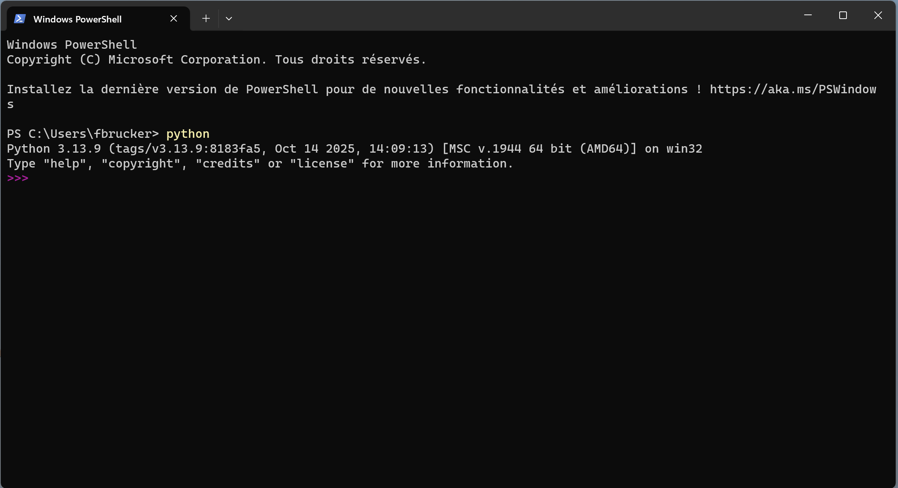
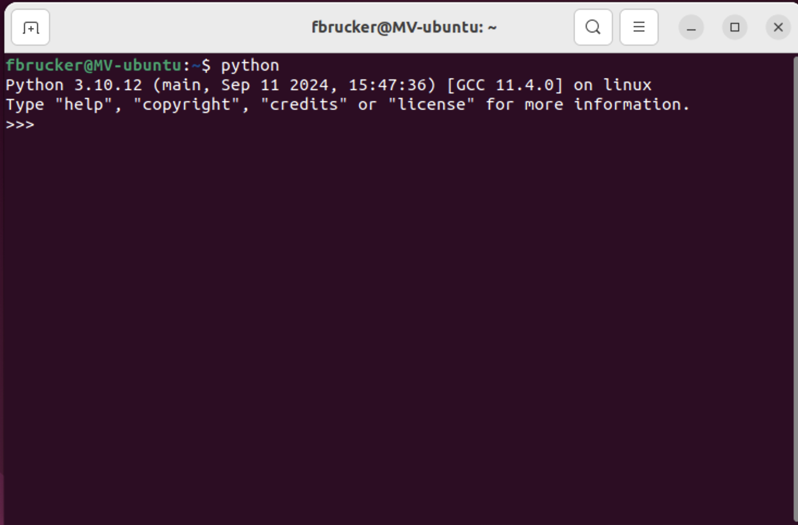

Installer et utiliser un interpréteur
Nous allons ici installer un interpréteur sur notre machine (si nécessaire sous windows) puis l'utiliser via un terminal.
Installation d'un interpréteur
Commençons par installer un interpréteur indépendant de l'application utilisée pour coder. Selon le système d'exploitation, la méthode d'installation est un peu différente :
Sous Windows 11
Utilisez le Microsoft store.
Puis installez le via le store.
Sous Linux/Ubuntu
Python est installé par défaut, mais il ne contient pas le module pip permettant d'installer de nouveaux modules à python. Pour installer pip, tapez dans un terminal :
sudo apt install python3-pip
Enfin, la commande pour taper python est python3. Pour avoir le même comportement que sous windows où cette commande s'appelle juste python, vous pouvez installer :
sudo apt install python-is-python3
Vous pourrez uniquement taper python dans un terminal pour exécuter l'interpréteur python,
Sous Macos
De même que sous Linux/Ubuntu, python est installé par défaut, mais il s'appelle python3. Mais avant de pouvoir l'utiliser il vous faudra installer les Apple developer tools, en particulier xcode
Pour avoir le même comportement que sous windows et Linux où cette commande s'appelle juste python, vous pouvez taper dans un terminal :
echo "alias python=python3" >> ~/.zshrcPuis fermez et ouvrez un nouveau terminal pour les modifications soient appliquées.
Exécuter l'interpréteur depuis un terminal
Ouvrez un terminal et tapez python puis la touche entrée : vous êtes dans un interpréteur.
Powershell

Terminal Linux

Terminal mac

Utiliser et sortir de l'interpréteur
Vous pouvez ensuite taper le bonjour universel :
>>> print("bonjour Monde !")
bonjour Monde !
>>>Puis sortir de l'interpréteur en tapant quit() qui exécute la fonction permettant de sortir de l'interpréteur :
>>> quit()
❯Notez que vous pouvez aussi, sous Linux et mac, taper la combinaison de touches ^D (la touche ctrl et la touche D en même temps) pour sortir de l'interpréteur et retourner dans le terminal.